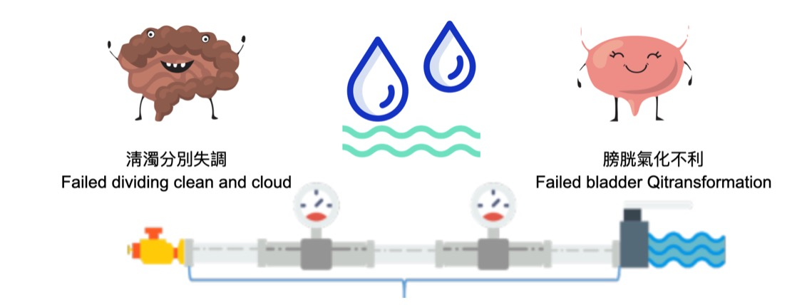
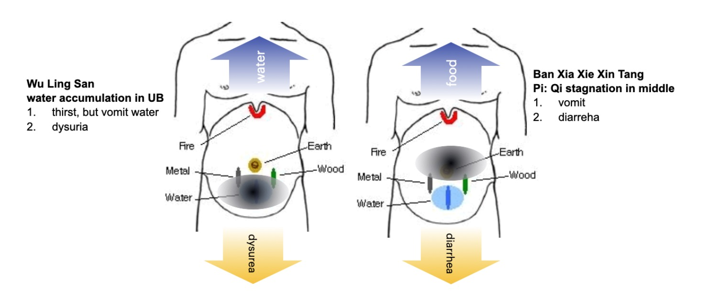

1. 오령산(五苓散)이란?
오령산(五苓散)은 중국 후한대(後漢代) 의서 『상한잡병론(傷寒雜病論)』에 처음 등장하는 처방으로, 인체의 수분 대사 불균형, 즉 '수습(水濕)' 또는 '수독(水毒)'을 조절하는 대표적인 이수제(利水劑)입니다. 현대 중의학 교과서에서는 종종 오령산을 태양병(太陽病) 처방으로 분류하여 감기 같은 표증(表證)에 사용하는 것으로 가르치기도 합니다. 하지만 『상한잡병론』의 원문을 살펴보면, 태양병 편에 수록되었다고 해서 반드시 표증에만 국한되는 것이 아니며, 표리(表裏) 겸증이나 순수한 이증(裏證)에도 폭넓게 사용되었음을 알 수 있습니다.
2. 『상한잡병론』 원문과 3대 주증(主症)
오령산의 초기 모습은 『상한잡병론』의 다음 조문들에서 명확히 드러납니다.
“太陽病, 發汗後, 大汗出胃中乾, 煩躁不得眠, 欲得飮水者, 少少與飮之. 令胃氣和則愈. 若脈浮, 小便不利, 微熱消渴者, 五苓散主之.”
[해석] 태양병에 발한시킨 후 땀을 많이 흘려 위(胃)가 건조해져서 번조하며 잠을 이루지 못하고 물을 마시고 싶어하면, 물을 조금씩 주어 위기(胃氣)가 조화롭게 되면 낫는다. 만약 맥이 부(浮)하고 소변이 시원치 않으며 미열이 있고 갈증이 나면 오령산으로 다스린다.
“中風發熱, 六七日不解而煩, 有表裏證, 渴欲飮水, 水入則吐者, 名曰水逆, 五苓散主之.”
[해석] 중풍(中風)으로 발열한 지 6~7일이 되어도 낫지 않고 번조하며 표리증(表裏證)이 있고, 목이 말라 물을 마시려 하는데 물이 들어가면 곧 토하는 것을 수역(水逆)이라 하며, 오령산으로 다스린다.
이 조문들을 통해 오령산의 핵심 병태, 즉 3대 주증(主症)을 파악할 수 있습니다. 첫째, 감기 증상(미열, 맥부 등 표증)이 있거나 혹은 없는 상태이고, 둘째, 갈증(소갈)이 있으나 물을 마시면 역류하여 토하는 증상(수역, 水逆)이 있으며, 셋째, 소변이 시원하게 나가지 못하는 증상(소변불리, 小便不利)이 나타나는 것입니다.
[오령산 3대 주증 요약]
- 감기 증상(미열, 맥부 등 표증)
- 갈증(소갈)이 있으나 물을 마시면 역류하여 토하는 증상 (수역, 水逆)
- 소변이 시원하게 나가지 못하는 증상 (소변불리, 小便不利)
감기 증상 (표증 유무)
+
갈증 (소갈) & 수역(水逆) (물 마시면 토함)
+
소변불리 (小便不利) (소변이 시원치 않음)
이 세 가지 증상은 체내 수습(水濕) 정체로 인한 수분 대사 불균형을 나타냅니다.
이는 수습(水濕)이 체내에 정체되어 순환을 막고 있기 때문입니다. 수분 순환이 안 되니 갈증을 느끼고, 정체된 물이 물길을 막아(마치 싱크대 하수구가 막힌 것처럼) 새로 들어온 물을 역류시키는 것입니다. 소변불리는 수액 대사의 최종 배출구가 막힌 것을 의미합니다. 여기서 처방에 포함된 계지(桂枝)는 감기 증상이 있을 때는 해표(解表) 작용을 하고, 감기 증상이 없을 때는 내부를 따뜻하게(溫裏) 하여 수분 대사를 돕는 이중적 역할을 수행합니다.
"上五味, 搗為散, 以白飲和服方寸匕, 日三服, 多飲暖水, 汗出愈。"
[해석] "위의 다섯 가지 약재를 빻아 가루로 만들어, 흰 미음과 함께 한 숟가락(方寸匕)씩 하루 세 번 복용한다. 따뜻한 물을 많이 마셔 땀을 내면 낫는다."
이 조문은 오령산을 먹고 계지탕과 마찬가지로 땀을 낸다고 밝힙니다. 다만, 표증이 없다면 이렇게 땀을 낼 필요가 없습니다.
3. 적응증의 역사적 확대
오령산의 적응증은 시대를 거치며 확대되었습니다. 당대(唐代) 손사막(孫思邈)의 『비급천금요방(備急千金要方)』에서는 열병으로 인한 탈수와 의식착란(광언, 번조) 및 황달에도 활용 가능함을 제시했습니다. 명대(明代) 공정현(龔廷賢)의 『만병회춘(萬病回春)』에서는 산후 출혈 및 손상(대소장교) 같은 부인과 질환으로 범위가 넓어졌습니다.
특히 주목할 만한 점은 일본 에도 시대 의사 고토 콘잔(後藤艮山)의 『병인고(病因考)』입니다. 그는 오령산을 감염성 질환 외에 '중습(中濕)'에도 사용할 수 있다고 보았고, 전신의 기(氣)를 소통시켜 소변을 통해 습(濕)을 제거한다는 기전을 제시했습니다. 이는 병의 원인이 '습(濕)'이라면 신체 어느 부위든 오령산을 활용할 수 있다는 현대적 확장성의 이론적 기반이 되었습니다.
설사(泄瀉)에 오령산을 사용한 조문(『상한잡병론』 386조: "吐利霍亂 頭痛發熱 身疼痛 熱多欲飮水者 五苓散主之.") 역시 이러한 기전으로 설명됩니다. 이는 수액이 장(腸)으로 과도하게 쏠리는 것을 소변 쪽으로 되돌려 대변의 수분을 줄이는 원리입니다. 흥미롭게도 이는 서양 의학에서 변비 치료제(완하제)를 사용하여 야뇨증 아동 30명 중 25명(83%)을 치료한 연구와도 원리적으로 맞닿아 있습니다. 이 연구에서는 직장의 분변이 방광을 압박하는 것을 변비약으로 해소하여 야뇨증을 치료했습니다 (Hodges, S.J. (2012, Jan 27). Urology. Wake Forest Baptist Medical Center).

한국의 『동의보감(東醫寶鑑)』에서는 오령산을 주로 이증(裏證)의 관점에서 다룹니다. 허준(許浚)은 「한문(寒門)」에서 수역증(水逆證)을 언급하며, "상한병에 땀을 낸 후 진액이 고갈되어... 물을 마시면 산포하지 못하고 도리어 토하는 수역증과... 물은 많이 마시나 소변이 잘 나오지 않는 것들은 다 이열(裏熱)이 실(實)하지 않아 물을 소화시키지 못하기 때문"이라며, 이때 오령산이 적합하다고 설명했습니다. 또한 신기(腎氣)가 허(虛)하여 사열(邪熱)이 신경(腎經)으로 들어가 소변이 잦거나 통증이 있는 경우(현대의 방광염, 요도염 증상)에도 오령산을 활용할 수 있음을 밝혔습니다.
4. 처방 구성과 약리
오령산은 택사(澤瀉), 적복령(赤茯苓), 저령(豬苓), 백출(白朮), 그리고 계지(桂枝) 또는 육계(肉桂)로 구성됩니다. 택사가 군약(君藥)으로 방광에 작용하여 삼습이수(渗濕利水)하고, 복령과 저령이 신약(臣藥)으로 이를 돕습니다. 세 가지 이수약을 함께 쓰는 것은 부작용을 줄이고 수분 조절 효능을 극대화하기 위함입니다. 백출은 좌약(佐藥)으로 비위(脾胃)를 도와 수습을 운화(運化)시킵니다. 이 네 가지 약재로 구성된 것이 사령산(四苓散)이며, 여기에 계지나 육계가 더해진 것이 오령산입니다. 육계는 신양(腎陽)을 보하여 하초(下焦)와 내부(裏)에 작용하므로 오령산은 사령산보다 다소 허(虛)한 상태에, 계지는 상대적으로 가벼워 상초(上焦)와 표(表)에 작용하므로 표증을 겸했을 때 사용합니다.
오령산 처방 구성 및 약리
택사(澤瀉)
군약(君藥)
방광 작용, 삼습이수(渗濕利水)
적복령(赤茯苓)
신약(臣藥)
이수 작용 보조
저령(豬苓)
신약(臣藥)
이수 작용 보조
백출(白朮)
좌약(佐藥)
비위(脾胃) 강화, 수습 운화(運化)
계지(桂枝) / 육계(肉桂)
사약(使藥)
표증(계지) / 리허(육계) 조절
사령산(위 4가지) + 계지/육계 = 오령산
5. 주요 합방(合方)
오령산은 다음과 같이 다른 처방과 합방(合方)하여 활용되기도 합니다.
- 위령탕(胃苓湯): 오령산 + 평위산(平胃散). 소화기가 약하여 발생되는 설사에 사용합니다.
- 곽령탕(藿苓湯): 오령산 + 곽향정기산(藿香正氣散). 외감(外感)이나 소화기 장애로 인한 설사에 사용합니다.
- 군령탕(君苓湯): 오령산 + 사군자탕(四君子湯). 허약(虛弱)을 겸한 부종과 설사에 사용합니다.
- 시령탕(柴苓湯): 오령산 + 소시호탕(小柴Ho湯). 간장 장애로 인한 부종 또는 복수, 한열왕래(寒熱往來)가 있을 때 사용합니다.
- 사령오피산(四苓五皮散): 사령산 + 오피산(五皮散). 부종을 급속히 빼주는 역할을 합니다.
- 이령탕(理苓湯): 오령산 + 이중탕(理中湯). 몸이 차면서 부종이 있을 경우에 사용합니다.
- 유령탕(萸苓湯): 오령산 + 향유산(香薷散). 여름철 설사에 사용합니다.
- 우공산(禹功散): 오령산 + 이진탕(二陳湯). 습체(濕滯)를 겸한 이완(弛緩)으로 인한 소변불리, 오줌소태에 사용합니다.
- 인진오령산(茵蔯五苓散): 오령산 + 인진(茵蔯). 황달에 사용합니다.
6. 오령산과 반하사심탕 비교
오령산은 반하사심탕(半夏瀉心湯)과 비교하여 이해하면 도움이 됩니다. 두 처방 모두 막힘(滯)으로 인해 역류가 일어나고, 배뇨나 배변 장애를 유발한다는 공통점이 있습니다. 하지만 막히는 위치와 원인, 그리고 주증상이 다릅니다.
- 병의 위치: 오령산은 주로 하초(下焦, 하체)의 수습(水濕)이 막히는 것인 반면, 반하사심탕은 중초(中焦, 소화기)에 담(痰), 습(濕), 기(氣), 식(食) 등이 복합적으로 막히는 것입니다.
- 역류 증상: 오령산은 물길(水道)이 막혀 물을 마시면 토하는 '수역(水逆)'이 특징인 반면, 반하사심탕은 음식길(소화기)이 막혀 음식을 먹으면 구역질이나 구토가 나는 '오심(惡心), 구(嘔)'가 특징입니다.
- 배설 문제: 오령산은 물길의 문제이므로 주로 '소변불리(小便不利)' 같은 배뇨 문제를 다루지만, 반하사심탕은 소화기의 문제이므로 '설사(泄瀉)'나 '변비(便秘)'(혹은 둘의 반복) 같은 배변 문제를 주로 다룹니다.

| 특징 |
오령산 (五苓散) |
반하사심탕 (半夏瀉心湯) |
| 병의 위치 |
하초 (下焦) - 방광, 신(腎) |
중초 (中焦) - 비위(脾胃) |
| 병리 |
수습(水濕) 정체 |
한열(寒熱) 및 기(氣)의 착잡(錯雜), 담습(痰濕) |
| 주요 증상 |
소변불리 (小便不利) |
심하비(心下痞) (명치 막힘) |
| 역류 |
수역(水逆) (물 마시면 토함) |
오심/구토 (악심/嘔吐) (음식 역류) |
| 배설 |
배뇨 문제 (소변 이상) |
배변 문제 (설사 또는 변비) |
7. 현대적 활용 및 최신 연구
이러한 고전적 이해를 바탕으로 현대에는 오령산이 수양성 설사를 동반한 급성 위장염, 구역, 구토, 각종 어지럼(메니에르병, 멀미, 숙취), 부종, 두통 등에 광범위하게 활용되고 있습니다. 최근에는 이러한 효과가 세포막의 수분 채널인 '아쿠아포린(Aquaporin, AQP)' 조절과 관련이 있다는 기전이 밝혀지면서, 신경외과 영역인 만성 경막하 혈종(CSDH) 치료에도 적용되고 있습니다.
관련하여 한국의 연구에서는 오령산의 아쿠아포린 조절 기전에 주목했습니다. 뇌 허혈 동물 모델을 이용한 한 실험 연구에서는 오령산이 뇌부종을 유발하는 주요 수분 채널인 아쿠아포린-4(AQP4)의 발현을 억제함으로써 뇌세포를 보호하고 뇌부종을 유의하게 감소시키는 효과를 보고하였습니다. 이는 오령산이 단순히 소변량을 늘리는 것을 넘어, 세포 수준에서 수분 대사 자체를 조절할 수 있음을 시사합니다 (신, 상우, 외. (2010). 백서의 국소 뇌 허혈 모델에서 오령산이 뇌부종 및 Aquaporin-4 발현에 미치는 영향. 대한한의학회지, 31(1), 105-117).
일본에서는 오령산(일본명: 고레이산)을 만성 경막하 혈종(CSDH) 치료에 활발히 적용해왔습니다. 특히 주목할 만한 무작위 대조 시험(RCT)에서, 만성 경막하 혈종 제거 수술 후 오령산을 복용한 환자군이 위약군에 비해 혈종 재발률이 현저히 낮게 나타났습니다. 연구진은 오령산이 뇌의 수분 대사(아쿠아포린 조절 등)에 관여하여 혈종의 재흡수를 돕고 뇌부종을 억제함으로써 재발을 방지하는 것으로 추정했으며, 이는 오령산이 신경외과적 수술 후 관리에도 유용한 보조 치료제가 될 수 있음을 보여줍니다 (Ishikawa, T., et al. (2007). Goreisan prevents recurrence of chronic subdural hematoma. Neurologia Medico-Chirurgica, 47(9), 393-397).
또한, 일본에서는 메니에르병으로 인한 어지럼증 치료에 오령산을 사용한 임상 연구가 진행되었습니다. 한 전향적 연구에서는 메니에르병 환자에게 오령산을 투여한 결과, 대조군에 비해 현기증 발작 빈도가 유의하게 감소했으며, 내이(內耳)의 림프 수종(endolymphatic hydrops) 개선이 확인되었습니다. 이는 오령산이 내이의 수분 대사를 조절하여 어지럼증을 완화할 수 있음을 시사합니다 (Uno, K., et al. (2017). A prospective study of Goreisan for Meniere's disease. Otology & Neurotology, 38(8), e308-e313).
뿐만 아니라 신증후군(Nephrotic syndrome) 환자의 난치성 부종에 대한 오령산의 효과를 탐구한 일본의 임상 연구도 있습니다. 기존의 강력한 이뇨제(루프 이뇨제)에 반응하지 않던 환자들에게 오령산을 병용 투여한 결과, 소변량이 유의하게 증가하고 부종이 개선되었으며, 전해질 불균형 같은 부작용은 관찰되지 않았습니다. 이는 오령산이 기존 이뇨제와는 다른 기전(AQP 조절 등)으로 작용하여 난치성 부종 치료의 유용한 보조제가 될 수 있음을 보여줍니다 (Nakamura, T., et al. (2013). Goreisan improves diuretic-resistant edema in nephrotic syndrome. Clinical and Experimental Nephrology, 17(5), 716-720).
결론적으로 오령산은 급성 열성 질환의 수분 대사 이상에 사용되던 초기 처방에서 출발하여, '수독(水毒)'이라는 병태를 조절하는 핵심 처방으로 발전했으며, 최근에는 아쿠아포린 조절이라는 현대 과학적 기전이 규명되면서 그 활용 범위가 더욱 넓어지고 있습니다.
8. 저령탕(豬苓湯)
저령탕(豬苓湯)은 『상한론(傷寒論)』에 근거한 처방으로, 태양병에서 시작된 사기가 양명 또는 소양으로 전변하면서 열이 생기고, 이 열이 체내의 수(水)와 서로 엉켜 수열호결(水熱互結)을 이루어 방광의 기화가 막히는 병기를 겨냥합니다. 그 결과 배뇨 곤란·뇨삽·뇨통·빈뇨와 같은 비뇨기계 증상이 중심에 서며, 열상으로 인한 갈증이 심해 물을 계속 찾게 되고, 음액 손상으로 인해 번조(심번)·불면이 쉽게 동반됩니다. 때때로 오심·구토, 물 같은 설사, 하복부 그득함과 통증, 심하면 혈림(혈뇨 동반 배뇨통)까지 나타날 수 있습니다.
상한론의 맥락에서 보면, 외감된 한사가 내부로 침입하여 열로 전화하고, 그 열이 체내 정수와 호결하여 방광 기화가 저해되며, 이때의 열은 음을 상하게 해 강한 구갈·불면·초조 같은 음허화왕 양상을 촉발합니다. 특히 노인의 경우 본래 진액이 부족하고, 젊은 층이라도 과도한 발한·정혈 소모(정액, 생리혈) 등 체액 손실이 누적되거나 고열이 며칠 지속되면 혓바늘이 돋고 설태가 적거나 무태가 되며, 거울처럼 번들거리면서 혀가 말라 위축되는 소견이 관찰됩니다. 이는 고열에 의한 세포 내액의 대량 소실과 흉복강 내 체액 저류가 병행되는 병태로 이해할 수 있으며, 이때 저령탕의 정증이 드러납니다.
저령탕은 활석(滑石)으로 청열이수하고, 아교(阿膠)로 음을 보해 건조와 번조를 제어하면서 이수통림을 도모합니다. 그러므로 단순히 물이 정체된 상태만이 아니라, 열과 물이 엉켜 생긴 비뇨기 염증성 증상, 혈림, 그리고 음허로 인한 불면·심번·갈증까지 두루 포괄합니다. 임상에서는 물 같은 설사에도 응용되며, 비뇨기계 염증과 점막 손상이 뚜렷할 때 특히 적합합니다.
한편 오령산(五苓散)과 저령탕은 모두 수액 대사 장애를 다루지만, 접근법이 다릅니다. 오령산은 방광의 기화(膀胱氣化)를 돕는 온양적 방향성이 강해 표증이 남아 있거나 발한·구토 등의 표리 동시 문제에 쓸 여지가 크고, 두통·신체통·오한 등의 표증이 보일 수 있습니다. 반면 저령탕은 하초의 수열호결에 초점을 맞추어 청열·양음하면서 이뇨를 유도합니다. 또한 제형 면에서도 오령산은 산제로, 저령탕은 탕제로 쓰이는 점이 다릅니다. 저령탕은 청열하는 효과가 오령산 보다 크고, 음허에 활용할 수 있는 처방입니다. 음허하면서 허열이 있는 만성 방광염에도 다용하는 처방입니다.
현대 연구
현대 연구에 따르면 저령탕은 이뇨, 결석 형성 억제, 신장 염증 완화 같은 기본 작용을 바탕으로 전립선비대증 관련 배뇨 불편, 야간뇨·배뇨통·잔뇨감, ESWL 후 배석 촉진 등 임상 증상 개선에 도움이 될 수 있다는 보고들이 있다. (油田正樹, 泌尿紀要 1981;27:677 / 原中瑠璃子 외, Proc Symp WAKAN-YAKU 1981;14:105) 쉽게 말해 소변이 더 잘 나오도록 도와 붓기나 요정체(소변이 남아 있는 상태)를 줄이는 데 보탬이 될 수 있다. 또한 신장이나 요로에서 결석(돌)이 생기는 과정을 억제하는 효과가 관찰되었으며(吉岡俊昭 외, Prog Med 1996;16:195), 이는 소변 속 결정이 뭉쳐 돌이 되는 것을 줄여줄 가능성을 시사한다. 아울러 신장에 염증이 있을 때 그 염증 반응을 완화하는 항신염(抗腎炎) 작용도 확인되어(久保道徳 외, 和漢医薬学会誌 1989;6:115 / 許慶友 외, 漢方医学 1993;17:237) 염증성 신질환에서의 잠재적 유용성을 뒷받침한다. 임상적으로는 전립선 비대증과 관련된 배뇨시간 연장·잔뇨감 등 주관·객관 지표의 개선이 보고되었고(酒本 護 외, 제13회 泌尿器科漢方研究会 1996:7), 주·야간 빈뇨·배뇨통·잔뇨감 등 요로 불정(不定) 증상의 전반적 호전도 관찰되었다(布施秀樹 외, 泌尿器外科 1995;8:603). 더불어 체외충격파 결석 파쇄술(ESWL) 이후에는 잘게 부서진 결석의 배출을 촉진하고 배석에 걸리는 일수를 단축시키는 데 도움이 되었다는 결과가 제시되었으며(武島 仁, 現代医療学 1994;9:195 / Wada S. 외, Jpn J Endourol ESWL 2001;14:155 / 高田昌彦 외, 泌尿紀要 1997;43:311), 원인 미상의 요도증후군에서도 유효성이 보고되었고(菅谷公男 외, 泌尿紀要 1992;38:731), 특정 향정신약으로 인해 발생한 배뇨장애의 개선에도 기여했다는 임상 보고가 축적되어 있다(岩崎真三 외, 漢方医学 1996;20:153).
이 연구들은 주로 1980~2000년대 초에 주로 일본에서 발표된 연구·임상보고를 바탕으로 한 요약이며, 연구 설계나 규모가 서로 달라 결과를 단정하기 어렵습니다.
오령산과의 비교
| 비교 항목 |
오령산 (五苓散) |
저령탕 (豬苓湯) |
| 주요 증상 |
땀이 많음, 구토가 극렬함, 두통, 현훈, 신체통, 오한 (표증 가능) |
출혈성 질환, 번조(煩躁), 불면, 염증성 비뇨기 증상 (뇨삽, 뇨통, 혈림 등) |
| 주요 약물 & 작용 |
계지, 백출 (온양화기, 거습) |
활석, 아교 (청열이수, 자음윤조) |
| 치료 수단 |
발한 (發汗) (표증 시), 온화이수 (溫化利水) |
청열이수 (淸熱利水), 자음윤조 (滋陰潤燥) |
| 복진 |
심하정수 (心下停水) 가능 |
심하정수 없음 |
| 응용 범위 |
광범위 (수액 편재 조절) |
비뇨기계 전문 (수열호결, 음허내열) |
| 설/맥 |
표증 동반 시 맥 부(浮) |
설홍(紅), 태소(少)·무태(無苔), 맥 삭(數) (혹은 세삭) |
(출처: 황황(黃煌), 경방백수(經方百首))
1. What is Wulingsan (五苓散)?
Wulingsan (五苓散) is a representative diuretic formula (利水劑) first appearing in the "Treatise on Cold Damage and Miscellaneous Diseases" (傷寒雜病論) from the Eastern Han Dynasty. It is designed to regulate imbalances in the body's water metabolism, known as 'Water-Damp' (水濕) or 'Water Toxin' (水毒). While modern Chinese medicine textbooks often classify Wulingsan as a formula for Taiyang disease (太陽病), suggesting its use for exterior patterns (表證) like the common cold, a closer look at the original text reveals it was not limited to exterior patterns. It was also widely used for combined exterior-interior (表裏) patterns or purely interior (裏證) patterns.
2. Original Text and 3 Key Symptoms from "Treatise on Cold Damage and Miscellaneous Diseases"
The early profile of Wulingsan is clearly outlined in the following clauses from the "Treatise on Cold Damage and Miscellaneous Diseases":
“太陽病, 發汗後, 大汗出胃中乾, 煩躁不得眠, 欲得飮水者, 少少與飮之. 令胃氣和則愈. 若脈浮, 小便不利, 微熱消渴者, 五苓散主之.”
[Interpretation] After inducing sweating in Taiyang disease, if there is profuse sweating, dryness in the stomach, vexation, inability to sleep, and a desire to drink, give water little by little. When the stomach Qi is harmonized, it resolves. If the pulse is floating, urination is difficult, and there is a slight fever with thirst (Xiaoke), Wulingsan governs.
“中風發熱, 六七日不解而煩, 有表裏證, 渴欲飮水, 水入則吐者, 名曰水逆, 五苓散主之.”
[Interpretation] In Zhongfeng (wind strike) with fever, unresolved after six or seven days, with vexation, exterior-interior patterns, and thirst with a desire to drink, but vomiting immediately after water intake, this is called Water Reversal (水逆), Wulingsan governs.
These passages reveal Wulingsan's core pathology, the three key symptoms (主症): 1. The presence or absence of cold-like symptoms (e.g., slight fever, floating pulse). 2. Thirst (Xiaoke), but vomiting immediately after drinking (Water Reversal, 水逆). 3. Difficulty in urination (小便不利).
[Summary of Wulingsan's 3 Key Symptoms]
- Presence or absence of cold-like symptoms (slight fever, floating pulse, etc.).
- Thirst (Xiaoke), but vomiting immediately after drinking (Water Reversal, 水逆).
- Difficulty in urination (小便不利).
Cold Symptoms (Exterior Pattern Present)
+
Thirst (Xiaoke) & Water Reversal (水逆) (Vomiting water)
+
Difficult Urination (小便不利)
These three symptoms indicate water metabolism imbalance due to Water-Damp (水濕) stagnation.
This condition arises because Water-Damp (水濕) has stagnated, obstructing circulation. The lack of water circulation causes thirst, yet the stagnant water blocks the pathway (like a clogged sink drain), causing newly ingested water to regurgitate. Difficulty in urination signifies a blockage at the final exit point of fluid metabolism. The Cinnamomi Ramulus (桂枝) in the formula performs a dual role: resolving the exterior (解表) when cold symptoms are present, and warming the interior (溫裏) to aid water metabolism when they are absent.
"上五味, 搗為散, 以白飲和服方寸匕, 日三服, 多飲暖水, 汗出愈。"
[Interpretation] "Grind the five ingredients above into a powder. Take one square-inch spoon (方寸匕) with white rice gruel, three times a day. Drink plenty of warm water, and recovery will come with sweating."
This clause clarifies that after taking Wulingsan, one should induce sweating, similar to Gui Zhi Tang (Cinnamon Twig Decoction). However, if there is no exterior pattern, it is not necessary to induce sweating this way.
3. Historical Expansion of Indications
The indications for Wulingsan expanded over time. In the Tang Dynasty, Sun Simiao (孫思邈) in the "Essential Formulas Worth a Thousand Gold" (備急千金要方) suggested its use for dehydration from febrile diseases, delirium (delirious speech, vexation), and jaundice. In the Ming Dynasty, Gong Tingxian (龔廷賢) in "Ten Thousand Diseases Return to Spring" (萬病回春) expanded its use to gynecological conditions like postpartum bleeding and injuries.
Particularly noteworthy is "A Study of Etiology" (病因考) by the Japanese Edo-period physician Goto Konzan (後藤艮山). He proposed Wulingsan's use not only for infectious diseases but also for 'Middle Dampness' (中濕), suggesting a mechanism of circulating Qi (氣) throughout the body to eliminate Dampness (濕) via urination. This provided the theoretical basis for its modern, broader application: if the root cause is 'Dampness' (濕), Wulingsan can be utilized regardless of the affected body part.
Its use for diarrhea (泄瀉) (as seen in clause 386: "Vomiting, diarrhea, cholera, headache, fever, body aches, with significant heat and desire for water, Wulingsan governs.") is also explained by this mechanism. It redirects excess fluid that has collected in the intestines (腸) back towards the bladder, thereby reducing the water content of the stool. Interestingly, this aligns in principle with a Western medical study where laxatives were used to treat nocturnal enuresis (bedwetting) in 30 children, curing 25 (83%). The study found that fecal impaction in the rectum was compressing the bladder, and resolving the constipation with laxatives cured the enuresis (Hodges, S.J. (2012, Jan 27). Urology. Wake Forest Baptist Medical Center).
Korea's "Donguibogam" (東醫寶鑑) primarily discusses Wulingsan from an interior pattern (裏證) perspective. Heo Jun (許浚) mentioned Water Reversal (水逆證) in the "Cold" section, explaining, "After sweating in a cold damage disease, fluids are depleted... when drinking water, it cannot be dispersed and is instead vomited (Water Reversal)... drinking a lot of water but not urinating properly are all because the interior heat (裏熱) is not substantial enough to digest the water," stating Wulingsan is appropriate in this case. He also noted its use for cases where Kidney Qi (腎氣) is deficient, allowing pathogenic heat (邪熱) to enter the Kidney channel, causing frequent or painful urination (modern symptoms of cystitis or urethritis).
4. Formula Composition and Pharmacology
Wulingsan is composed of Ze Xie (澤瀉), Fu Ling (赤茯苓), Zhu Ling (豬苓), Bai Zhu (白朮), and Gui Zhi (桂枝). Ze Xie acts as the monarch (君藥), working on the bladder to leach dampness and promote urination (渗濕利水). Fu Ling and Zhu Ling assist as ministers (臣藥). Using these three diuretics together reduces side effects and maximizes water-regulating efficacy. Bai Zhu serves as an assistant (佐藥) to support the Spleen and Stomach in transforming dampness. These four herbs alone constitute Siling-san (四苓散); adding Gui Zhi makes it Wulingsan. Cinnamomi Cortex (Rougui) tonifies Kidney Yang (腎陽) and acts on the Lower Jiao (下焦) and interior (裏), making it suitable for slightly more deficient states. Cinnamomi Ramulus (Guizhi) is relatively lighter, acting on the Upper Jiao (上焦) and exterior (表), and is used when an exterior pattern is also present.
Wulingsan Formula Composition and Pharmacology
Ze Xie (澤瀉)
Monarch Herb (君藥)
Acts on bladder, leaches dampness & promotes urination
Fu Ling (茯苓)
Minister Herb (臣藥)
Assists urination
Zhu Ling (豬苓)
Minister Herb (臣藥)
Assists urination
Bai Zhu (白朮)
Assistant Herb (佐藥)
Strengthens Spleen & Stomach, transforms dampness
Gui Zhi (桂枝) / Cortex (肉桂)
Envoy Herb (使藥)
Regulates Exterior (Guizhi) / Interior Deficiency (Rougui)
Siling-san (above 4) + Guizhi/Rougui = Wulingsan
5. Major Combinations (Hapbang)
Wulingsan is also used in combination with other formulas:
- Weiling-tang (胃苓湯): Wulingsan + Pingwei-san (平胃散). Used for diarrhea caused by weak digestion.
- Huoling-tang (藿苓湯): Wulingsan + Huoxiang Zhengqi-san (藿香正氣散). For diarrhea from external invasion or digestive disorders.
- Junling-tang (君苓湯): Wulingsan + Sijunzi-tang (四君子湯). For edema and diarrhea accompanied by weakness (deficiency).
- Chailing-tang (柴苓湯): Wulingsan + Xiao Chaihu-tang (小柴Ho湯). For edema or ascites from liver disorders, or for alternating chills and fever.
- Siling Wupi-san (四苓五皮散): Siling-san + Wupi-san (五皮散). To rapidly reduce edema.
- Liling-tang (理苓湯): Wulingsan + Lizhong-tang (理中湯). Used when there is edema along with a cold body.
- Yuling-tang (萸苓湯): Wulingsan + Xiangru-san (香薷散). For diarrhea in the summer.
- Yugong-san (禹功散): Wulingsan + Erchen-tang (二陳湯). For urinary difficulty or dysuria due to dampness stagnation.
- Yinchen Wuling-san (茵蔯五苓散): Wulingsan + Yinchen (茵蔯). Used for jaundice.
6. Comparison: Wulingsan vs. Banxia Xiexin Tang
It is helpful to understand Wulingsan by comparing it to Banxia Xiexin Tang (半夏瀉心湯). Both formulas address regurgitation and excretion issues caused by stagnation (滯). However, the location, cause, and key symptoms differ.
- Location of Illness: Wulingsan primarily addresses Water-Damp (水濕) obstruction in the Lower Jiao (下焦, lower body). Banxia Xiexin Tang addresses a complex blockage of Phlegm (痰), Damp (濕), Qi (氣), and food (食) in the Middle Jiao (中焦, digestive system).
- Regurgitation Symptom: Wulingsan is characterized by 'Water Reversal' (水逆) (vomiting *water* immediately after drinking). Banxia Xiexin Tang is characterized by 'Nausea' (惡心) and 'Vomiting' (嘔) (regurgitation of *food*).
- Excretion Issue: Wulingsan (a waterway issue) primarily treats 'Difficulty in Urination' (小便不利). Banxia Xiexin Tang (a digestive tract issue) primarily treats 'Diarrhea' (泄瀉) or 'Constipation' (便秘) (or their alternation).
| Feature |
Wulingsan (五苓散) |
Banxia Xiexin Tang (半夏瀉心湯) |
| Location of Illness |
Lower Jiao (下焦) - Bladder, Kidney |
Middle Jiao (中焦) - Spleen, Stomach |
| Pathology |
Water-Damp (水濕) Stagnation |
Complex of Cold(寒)/Heat(熱) & Qi(氣), Phlegm-Damp(痰濕) |
| Key Symptom |
Difficulty in Urination (小便不利) |
Epigastric Fullness (心下痞) |
| Regurgitation |
Water Reversal (水逆) (Vomiting water after drinking) |
Nausea/Vomiting (惡心/嘔吐) (Dry Vomiting after eating) |
| Excretion |
Urinary Issues |
Bowel Issues (Diarrhea or Constipation) |
7. Modern Applications and Recent Research
Based on this classical understanding, Wulingsan is widely used today for acute gastroenteritis with watery diarrhea, nausea, vomiting, various types of dizziness (Meniere's disease, motion sickness, hangovers), edema, and headaches. Recently, its efficacy has been linked to the regulation of 'Aquaporins (AQP),' cellular water channels, leading to its application in neurosurgery for the treatment of Chronic Subdural Hematoma (CSDH).
In relation, a Korean study focused on Wulingsan's aquaporin-regulating mechanism. An experimental study using an animal model of cerebral ischemia reported that Wulingsan protected brain cells and significantly reduced cerebral edema by inhibiting the expression of Aquaporin-4 (AQP4), the main water channel involved in brain swelling. This suggests Wulingsan regulates water metabolism at a cellular level, beyond simply increasing urine output (Shin, S.W., et al. (2010). The Effects of Wulingsan on Brain Edema and Aquaporin-4 Expression in a Rat Model of Focal Cerebral Ischemia. *Journal of Korean Medicine*, 31(1), 105-117).
In Japan, Wulingsan (named Goreisan) has been actively applied in the treatment of Chronic Subdural Hematoma (CSDH). A notable randomized controlled trial (RCT) found that the CSDH recurrence rate was significantly lower in the patient group that received Wulingsan after surgery compared to the placebo group. Researchers hypothesize that Wulingsan aids hematoma reabsorption and prevents recurrence by regulating brain water metabolism (e.g., AQP regulation) and inhibiting cerebral edema, demonstrating its potential as a useful adjuvant therapy in post-neurosurgical management (Ishikawa, T., et al. (2007). Goreisan prevents recurrence of chronic subdural hematoma. *Neurologia Medico-Chirurgica*, 47(9), 393-397).
Furthermore, clinical research has been conducted in Japan on the use of Wulingsan for dizziness caused by Meniere's disease. One prospective study showed that Wulingsan administration to Meniere's patients resulted in a significant decrease in vertigo attack frequency and an improvement in endolymphatic hydrops of the inner ear, suggesting Wulingsan can alleviate dizziness by regulating inner ear fluid metabolism (Uno, K., et al. (2017). A prospective study of Goreisan for Meniere's disease. *Otology & Neurotology*, 38(8), e308-e313).
Additionally, a Japanese clinical study explored Wulingsan's effect on refractory edema in patients with nephrotic syndrome. In patients who did not respond to conventional potent diuretics (loop diuretics), co-administration of Wulingsan resulted in a significant increase in urine output and improvement in edema, with no observed side effects like electrolyte imbalances. This indicates Wulingsan works via a different mechanism (e.g., AQP regulation) and can be a useful adjunct therapy for diuretic-resistant edema (Nakamura, T., et al. (2013). Goreisan improves diuretic-resistant edema in nephrotic syndrome. *Clinical and Experimental Nephrology*, 17(5), 716-720).
In conclusion, Wulingsan began as a formula for water metabolism abnormalities in acute febrile diseases, evolved into a core formula for managing the 'Water Toxin' (水毒) pathology, and with the recent clarification of its modern scientific mechanism (Aquaporin regulation), its range of applications continues to broaden.
8. Zhu Ling Tang (豬苓湯)
Zhu Ling Tang (豬苓湯), based on the "Shang Han Lun" (傷寒論), targets a pathological mechanism where pathogenic qi, originating from a Taiyang disease, transforms into heat as it enters Yangming or Shaoyang. This heat intertwines with the body's water (水), forming a "Water-Heat Interlocking" (水熱互結) that obstructs the bladder's Qi transformation. Consequently, urinary symptoms like difficult urination, strangury, painful urination, and frequent urination take center stage. Severe thirst from heat damaging fluids causes a constant desire to drink, and yin fluid depletion easily leads to vexation (心煩) and insomnia. Occasionally, it can also manifest as nausea, vomiting, watery diarrhea, fullness and pain in the lower abdomen, and in severe cases, "Blood Lin" (血淋, painful urination with hematuria).
In the context of the Shang Han Lun, an external cold pathogen invades, transforms into heat, and this heat binds with retained water, obstructing the bladder's Qi transformation. This heat damages yin, triggering Yin deficiency and effulgent fire symptoms like intense thirst, insomnia, and irritability. This is especially seen in the elderly, who are naturally deficient in Jinye fluids, or in younger people after significant fluid loss (sweat, semen, menses) or a persistent high fever. In such cases, the tongue may develop papules, have little or no coating, appear mirror-like, and become dry and atrophied. This condition, understood as a massive loss of intracellular fluid due to high fever concurrent with fluid retention in the thoracic and abdominal cavities, reveals the key pattern for Zhu Ling Tang.
Zhu Ling Tang uses Talcum (滑石) to clear heat and promote urination, and E Jiao (阿膠) to nourish yin, controlling dryness and vexation while promoting diuresis and relieving strangury. Therefore, it covers not just simple water retention, but also inflammatory urinary symptoms, hematuria caused by intertwined heat and water, and insomnia, vexation, and thirst due to yin deficiency. Clinically, it is also applied for watery diarrhea and is particularly suitable when urinary tract inflammation and mucosal damage are evident.
While both Wulingsan (五苓散) and Zhu Ling Tang address fluid metabolism disorders, their approaches differ. Wulingsan has a stronger warming-yang direction, aiding the bladder's Qi transformation (膀胱氣化), making it suitable for cases with a lingering exterior pattern, simultaneous exterior-interior issues like sweating or vomiting, or exterior symptoms like headache, body aches, and chills. In contrast, Zhu Ling Tang focuses on the interlocking of water and heat in the Lower Jiao, inducing urination while simultaneously clearing heat and nourishing yin. They also differ in preparation: Wulingsan is a powder (散), while Zhu Ling Tang is a decoction (湯). Zhu Ling Tang has a stronger heat-clearing effect than Wulingsan and can be used for yin deficiency. It is frequently used for chronic cystitis presenting with yin deficiency and vacuity heat.
Modern Research
According to modern research, there are reports that Zhu Ling Tang, based on fundamental actions like diuresis, inhibition of stone formation, and alleviation of kidney inflammation, can be helpful in improving clinical symptoms such as urinary discomfort related to benign prostatic hyperplasia, nocturia, painful urination, residual urine sensation, and promotion of stone expulsion after ESWL. (Yuda Masaki, Hinyokika Kiyo 1981;27:677 / Haranaka Ruriko et al., Proc Symp WAKAN-YAKU 1981;14:105) Simply put, it can help urine flow more easily, thus aiding in reducing swelling or urinary retention (a state where urine remains). Additionally, effects inhibiting the process of stone (calculus) formation in the kidneys or urinary tract have been observed (Yoshioka Toshiaki et al., Prog Med 1996;16:195), suggesting a potential to reduce the aggregation of urinary crystals into stones. Furthermore, an anti-nephritic action that alleviates the inflammatory response when there is kidney inflammation has also been confirmed (Kubo Michinori et al., Wakan İyaku Gakkaishi 1989;6:115 / Xu Qingyou et al., Kampo Igaku 1993;17:237), supporting its potential usefulness in inflammatory kidney diseases. Clinically, improvements in subjective and objective indicators related to benign prostatic hyperplasia, such as prolonged urination time and residual urine sensation, have been reported (Sakamoto Mamoru et al., 13th Urological Kampo Research Society Lecture Collection 1996:7), and overall improvement in undefined urinary symptoms like daytime/nighttime frequency, painful urination, and residual urine sensation has also been observed (Fuse Hideki et al., Hinyokika Geka 1995;8:603). Moreover, results have been presented indicating that it helps promote the expulsion of fragmented stones and shorten the expulsion period after Extracorporeal Shock Wave Lithotripsy (ESWL) (Takeshima Hitoshi, Gendai Iryogaku 1994;9:195 / Wada S. et al., Jpn J Endourol ESWL 2001;14:155 / Takada Masahiko et al., Hinyokika Kiyo 1997;43:311). Efficacy has also been reported in urethral syndrome of unknown cause (Sugaya Kimio et al., Hinyokika Kiyo 1992;38:731), and clinical reports have accumulated suggesting its contribution to improving urinary dysfunction caused by certain psychotropic drugs (Iwasaki Shinzo et al., Kampo Igaku 1996;20:153).
These studies are primarily summaries based on research and clinical reports published mainly in Japan from the 1980s to the early 2000s. Due to variations in study design and scale, it is difficult to draw definitive conclusions from the results.
Comparison with Wulingsan
| Comparison Point |
Wulingsan (五苓散) |
Zhu Ling Tang (豬苓湯) |
| Key Symptoms |
Profuse sweating, severe vomiting, headache, dizziness, body aches, chills (exterior pattern possible) |
Hemorrhagic diseases, vexation, insomnia, inflammatory urinary symptoms (strangury, dysuria, hematuria etc.) |
| Key Herbs & Actions |
Gui Zhi, Bai Zhu (Warm Yang, transform Qi, dispel damp) |
Hua Shi, E Jiao (Clear heat, promote urination, nourish yin, moisten dryness) |
| Treatment Method |
Inducing sweat (發汗) (if exterior pattern), warming transformation & promoting urination (溫化利水) |
Clearing heat & promoting urination (淸熱利水), nourishing yin & moistening dryness (滋陰潤燥) |
| Abdominal Sign |
Possible water accumulation under the heart (心下停水) |
No water accumulation under the heart |
| Scope |
Broad (regulating fluid distribution) |
Specialized (urinary system, esp. water-heat interlocking, yin deficiency with heat) |
| Tongue/Pulse |
Floating pulse (脈浮) if exterior pattern present |
Red tongue (舌紅), little/no coat (苔少/無苔), rapid (脈數) or thin-rapid pulse |
(Source: Huang Huang (黃煌), Jing Fang Bai Shou (經方百首))